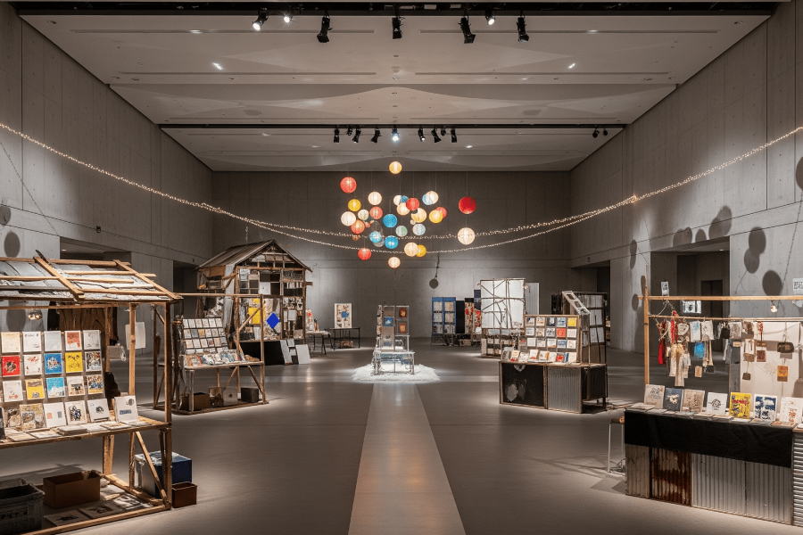

ナイトミュージアム特別企画「縁日ワークショップ」

千葉県佐倉市の3つの文化施設が合同開催する「納涼ナイトミュージアム2025」が今年も行われます。当館はナイトミュージアム期間中の特別企画として、「縁日ワークショップ」を2日間にわたって開催いたします。
8月9日(土)は、電子工作ユニット「ギャル電」を講師に招き、手のひらサイズの電光掲示板の制作を行います。 また、8月16日(土)は、シルクスクリーンでお面を作ります。当館の職員がサポートしますので、電子工作やシルクスクリーンが初めての方もぜひご参加ください。
また、 8月9日、10日、 16日、17日は当館の一部を「縁日」をテーマにデコレーション。当館ゆかりのアーティストたちに開放します。廃材で屋台を組み立てるパフォーマンスをはじめ、本やグッズの手売り会が行われます。こちらもあわせてお楽しみください。
イベント当日は「縁日」の模様をSNSにてお知らせしますので、ぜひチェックしてみてください。
「DAY1：ミニ電光掲示板作りに挑戦しよう！」
- 日時
- 2025年 8月9日(土) 16:00～17:30
- 場所
- 1Fホワイエ
- 講師
- ギャル電
- 参加費
- 800円（材料代）
- 参加方法
- 事前予約制（当日参加不可）
募集は締め切りました
「DAY2：シルクスクリーンでお祭りのお面を作ろう！」
- 日時
- 2025年 8月16日(土) 16:00～17:30
- 場所
- 1Fホワイエ
- 参加費
- 500円（材料代）
- 参加方法
- 当日10:00より入口カウンターにて受付開始（先着順）